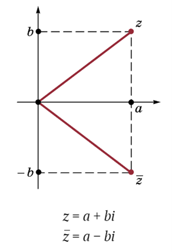
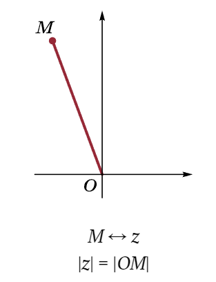

1. Комплексные числа – это число вида a + bi, где a и b – действительные числа, а i – символ, называемый мнимой единицей.
Множество комплексных чисел обозначают буквой С. Действительное число a отождествляют с комплексным числом a + 0 · i. Тем самым мы расширяем цепочку включений различных числовых множеств:
N ⊂ Z ⊂ Q ⊂ R ⊂ C.
Каждое комплексное число z — это некоторый символ вида a + bi. Число a называется действительной частью числа z, а число b — его мнимой частью. Определение сложения показывает, что при сложении комплексных чисел отдельно складываются их действительные и мнимые части.
Графическое изображение комплексных чисел
2. Правила сложения и умножения комплексных чисел:
Комплексные числа складывают по следующему правилу: (a1 + b1i) + (a2 + b2i) = a1 + a2 + (b1 + b2)i. По правилу умножения i · i = (0 + i) · (0 + i) = −1, т. е. квадрат мнимой единицы равен действительному числу −1. При умножении комплексных чисел просто раскрывают скобки по обычным правилам и заменяют i^2 на −1:
(a1 + b1i)(a2 + b2i) = a1a2 − b1b2 + (a1b2 + a2b1)i.
Обратим внимание на то, что не только i2 = −1, но и (−i)2 = −1.
3. Сопряженные комплексные числа:
Комплексные числа a + bi и a − bi называют сопряженными друг с другом. Их произведение равно действительному положительному числу a2 + b2. Если и можно записать тождество:
Отсюда ясно, что число является обратным для числа a + bi. Умея вычислять обратное число, можно поделить одно комплексное число на другое (отличное от нуля).
Сопряженные числа
 Модуль комплексного числа
Сложение комплексных чисел

Противоположное комплексное число

Вычитание комплексных чисел
4. Изображение комплексных чисел:
Число z = a + bi можно изобразить точкой плоскости с координатами (a, b) (например, M(a, b)). При таком изображении сложение комплексных чисел соответствует сложению радиусоввекторов. Геометрическая интерпретация умножения комплексных чисел будет рассмотрена в главе, посвященной вращению и тригонометрическим функциям. Сопряженные числа изображаются точками, симметричными относительно оси абсцисс. Число являющееся расстоянием от точки, изображающей число z (говорят просто — от точки z), до начала координат, называется модулем комплексного числа и обозначается |z|.
Вопросы и упражнения